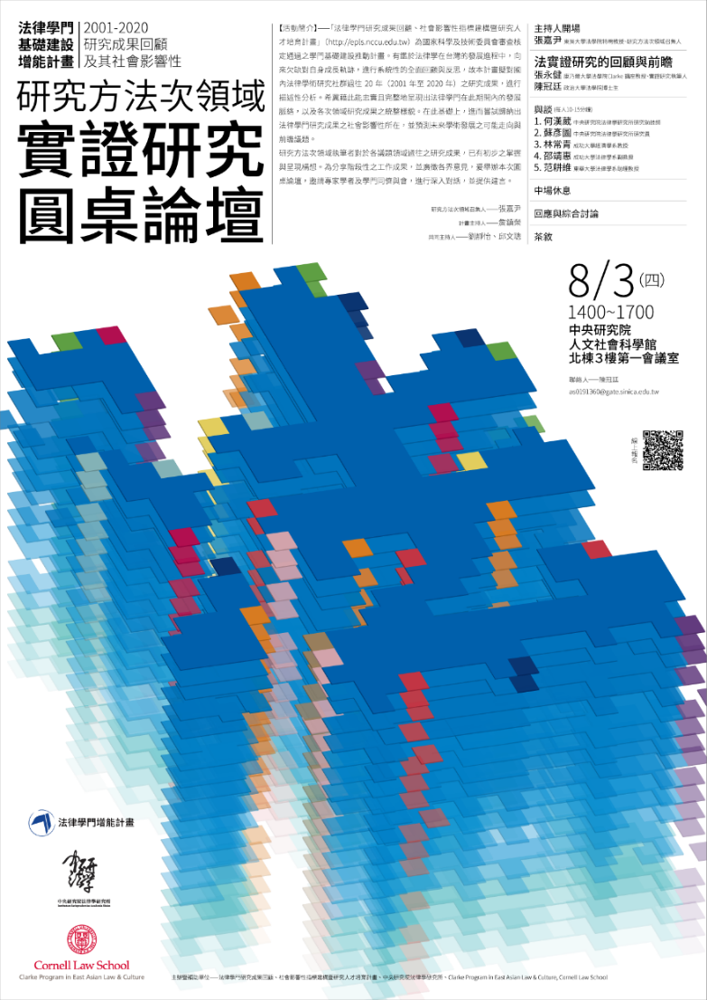

研究方法次領域：實證研究圓桌論壇
當卡努颱風正在北台灣肆虐，使得台北市政府倉促宣布停班停課之際，由「法律學門研究成果回顧、社會影響性指標建構暨研究人才培育計畫」及Clarke Program in East Asian Law & Culture, Cornell Law School 所共同主辦的《研究方法次領域：實證研究圓桌論壇》，仍風雨無阻地於2023年8月3日下午在線上如期召開。如同本計畫總主持人、政治大學法學院的詹鎮榮教授致詞時所言，本場圓桌論壇係「法律學門基礎建設增能計畫2001-2020 研究成果回顧及其社會影響性」系列活動的第二十場；此系列活動的構想，是希望能忠實且完整地呈現出法律學門過往20年的發展脈絡，以及各次領域研究成果之統整樣貌。第二十場所回顧的主題為法實證研究，係隸屬於「研究方法」此一次領域下，此一次領域係由本次會議的主持人、東吳大學法學院的張嘉尹特聘教授擔任召集人。而本次的法實證研究回顧，主要由現任職於康乃爾大學法學院的張永健講座教授所執筆和報告，政治大學法學院的陳冠廷博士生亦加入了撰寫工作。
作為一篇回顧報告，回顧的範圍與文獻來源是其基礎。按該文定義，任何與法相關並使用了經實證之方法所處理之資料者，都可算做法實證研究；惟由於作為一篇針對國內法學社群的回顧之作，因此將範圍限縮至以中文刊登於國內法學期刊或國內出版之書籍之作。在釐清界定後，陳冠廷也報告了這些著作的大致發表狀況、活躍作者與使用的研究方法。國內法實證研究的作品與其他法學子領域較為不同者有二。首先，部分友善並願意耕耘於實證研究的期刊，即便沒有TSSCI這樣的制度誘因，仍吸引了較多的實證研究之作的發表。其次，法實證研究的著作更常見到共著的現象，而這些共著的作者也有不少是不具法律學位的寶貴「外援」，而這也顯示了法實證研究的跨領域特性。至於方法的部分，實證研究的社群主要採取的方式有質性和量化兩種，而這些方法的偏好，則如文中所提到的，與學者們自身的學術背景有關。但作者並未要強調這種在方法上的對立，甚至提到同時結合質性與量化的可能性與可行性。
「法實證的研究者們往往面臨雙重困境，一方面，他們需要闡述實證研究如何有益於法學；另一方面，他們也需要向後來者展示如何進行實證研究。」
在簡要釐清了出版品及作者們概況後，張永健由法實證研究如何對於法學產生作用的方式，分析了這二十年來的法實證研究作品。做為一新興領域，法實證的研究者們往往面臨雙重困境，一方面，他們需要闡述實證研究如何有益於法學；另一方面，他們也需要向後來者展示如何進行實證研究。針對後一主題（如何做實證研究），由於法實證研究的跨領域特性，這些作者們多有來自其他學科之背景；而針對前一主題（為何需要做實證研究），張永健則以其過去與王鵬翔的著作為基礎，提出了實證研究之於法學的四種作用：第一是單純描述法論證與法現象；第二是衡量法的實效；第三是作為應然論證的實然基礎；第四是發掘法制度相關行動者（如法官、律師）的行為模式。

藉由提出了這四種功能，張永健一邊闡述了實證研究如何有益於法學研究，也一邊將二十年來的法實證研究著作分門別類。第一種描述法論證與法現象，主要是以實證的方式把握法院或法律文書，藉由這種可戲稱為「大數據判決研究」的方式更全面且廣泛地方式掌握目前的法律樣貌。由於我國判決資訊公開之故，多數法實證研究者多由此類研究起手。而和這類研究相似，但觀察方向略為不同的，是去觀察作出法律行動的行動者們的研究──也就是第四種類型。張永健指出，挖掘行動者行為模式的研究，也同樣是國內法實證研究的常見類型。而第二種則是衡量法之實效，這類研究主要是去檢視法律是否產生了論者所預期出現的後果（以及非預期後果）；與第一類研究不同的是，這類研究有著更為明確的法學問題意識，因此才有了特定著眼的方向與目標。但張永健認為，這種實證研究仍總是應然論證的實然基礎，要作為此類基礎，就必須為「差異製造事實」；而發現差異製造事實的研究，也就是以實證研究去發現法規範與事實之間的因果關係是否存在的一類研究。這種研究的目的，是指出法規範是否可以產生（或不產生）特定結果，因此對於法學的規範論證而言有最直接的功效。但張永健指出，由於這類研究需要更為精妙的研究設計，因此較少見於國內文獻，反倒更常見於國內學者以英文所撰寫的作品。
在釐清了法實證研究如何有益於法學之後，張永健也討論了法實證研究是否有影響力的問題。在本次回顧中，除少部分曾被普通法院判決以及憲法法庭的申請人直接援引（如許家馨的誹謗罪研究），較少看到這些作品有發揮一錘定音的影響。
在張永健的報告結束後，便由五位來自不同背景的與談人進行與談。第一位與談人是具統計博士學位且長期投入中研院法律所法實證研究的何漢葳研究助技師；何漢葳提出了本場論壇中最「恨鐵不成鋼」的發言。其首先針對該回顧文的呈現提出建議，認為張永健應當可用更為量化的方式來撰寫這篇回顧；其次，她也質疑張永健對於實證研究的後續討論上似乎未將質性與量化區分，未能注意到這兩種實證研究在方法與屬性上所具有的差別。最後，她也挑戰了張永健分類的嚴謹性，認為第一類與第四類似乎缺乏明確的區分判准，使得同樣針對（大）法官判決進行研究之作可能恣意地分在不同類型。而除前揭質疑，何漢葳也針對法實證研究這二十年的發展，提出一些批判與反思；其認為法實證研究的社群在這二十年的發展中，對於資料處理本身的掌握以及分析方法的認知都仍有待提升，不論是個別研究者們對於方法的掌握本身，或是此一研究社群用以檢視研究者的標準等等，都仍處在起始為艱、有待改進的階段。其因此認為，法實證研究應由法律人出於其法學素養認真對待法律，並以法律文本結構工程的方式，將非結構化的判決文本予以結構化，進而能讓良好掌握方法的「方法生產者」們透過嚴謹分析所得出之作，才是較佳的「以數說理」。
第二位與談人則是目前擔任中研院法律所法實證中心主任的蘇彥圖研究員。蘇彥圖首先好奇的是，法實證研究是否是2000年後才見於國內的研究方式，而未有在1990年代。其次，蘇彥圖從本回顧文的撰寫方式指出，法實證研究的特性可能在於是以研究方法而非事務（subject matter）所形塑。而從方法切入，蘇彥圖接著建議作者可更詳細地指出不同研究方法（如迴歸、訪談、田野等）的狀況。此外，蘇彥圖也以自身經驗呼應了該回顧文的跨領域特性，其指出在憲法領域中的實證研究較少見於法學期刊中，可能部分是已經被政治學者所包辦；但其同時也好奇，除了憲法領域外的其他部門法領域（如民、刑法等）之實證研究，是否也有類似的外部因素影響，或者只是出於實證研究的先行者們的個人研究興趣。
第三位與談者是成功大學經濟學系的林常青教授。林常青是長期為法學社群注入珍貴「外援」的法實證研究者，與法實證研究社群向來也有緊密連結。在這次回顧中，林常青便以自己從事法實證研究的經驗，展示了實證研究的各種資料來源。不過在其法實證研究的生涯中，除了實驗法或是使用如中央研究院調查研究中心的資料外，最大宗的確實仍然是判決實證研究；因此，如何更有技巧地攫取法院判決上的資訊，便是一大難題。由此，林常青呼應了何漢葳的法律文本結構工程之願景，並展示了幾個自身處理法律文本的過去寶貴經驗。
第四位與談是成功大學法律學系的邵靖惠副教授。邵靖惠首先針對作者在資料蒐集的部分提出建議，提醒作者應當注意一些「雖未直接提及實證字眼，但確實使用此等方法」的著作。此外，邵靖惠也指出，實證研究的另一項與其他法律學門子領域的重要分野在於資料，因此建議作者也應當將各個法實證資料庫也納入文中。而針對發表情況，邵靖惠以作者文中所計算的數據，指出實證研究這二十年間大抵處於平均一年不到三篇的狀況，某程度也呼應了法實證研究草創困境之說。而針對此一困境，邵靖惠以自身經驗指出，質性與量化結合的路線或許也確實比較容易為法學社群所接受。最後，邵靖惠也建議回顧的視角可擴及到碩博士論文：因為在新方法的學習上，年輕學子往往可能比資深學人更勇於嘗試，這群青年生力軍無疑也共同參與、形塑了實證研究此一新興領域的發展。
最後與談的是東華大學法律系的范耕維助理教授。范耕維同樣是從方法的討論提出建議，期待作者能爬梳出研究方法的細緻分布，進而呈現出趨勢上的變化是否發生「典範轉移」。此外，范耕維也從自身刑法學背景呼應了蘇彥圖的評論，指出刑事領域的實證研究也確實多為犯罪學者所包辦；但由於犯罪學的關注仍與刑法學有別，因此以（刑）法學觀點出發的實證研究仍有不可取代之處。這種法學觀點的實證研究，或許就是更在意法學的問題意識──特別是更會看到法律構成要件的實證研究。此外，范耕維也呼應了邵靖惠的觀點，以蔡維哲律師於台大經研所的碩士論文為例，指出碩博士論文中確有實證佳作可供參酌。

針對上述的熱烈與談，張永健也在第一時間作出簡要回應。針對文章本身的撰寫方式，張永健大抵同意與談人的寶貴意見，並允諾會在篇幅與字數等因素的考量下，適度進行修整。但由於部分與談人的建議，在內容上實已為梁志鳴、許菁芳、范蔚敏針對法實證研究的引用狀況所作的研究所包含，因此為避免掠人之美，可能不會於文中針對相同問題進行重複撰寫。而針對實證研究社群的發展，張永健主要以自身參與國內外實證研究社群的經歷回應與談人的意見。其雖然肯定法實證研究應當有法學的問題意識，但其認為較佳的論題應具普遍性，而普遍性的論題則多為社會科學的文獻所提出；因此在撰寫上仍不免需要多與這些文獻進行對話。
在外頭正風雨交加的午後，這場圓桌論壇也在線上開炮聲與歡笑聲兼具的情況下順利落幕。無疑地，這場圓桌論壇給予我們諸多值得省思但也值得展望之處；也期許下個二十年的法實證研究自此開始：停頓、思考、再出發。